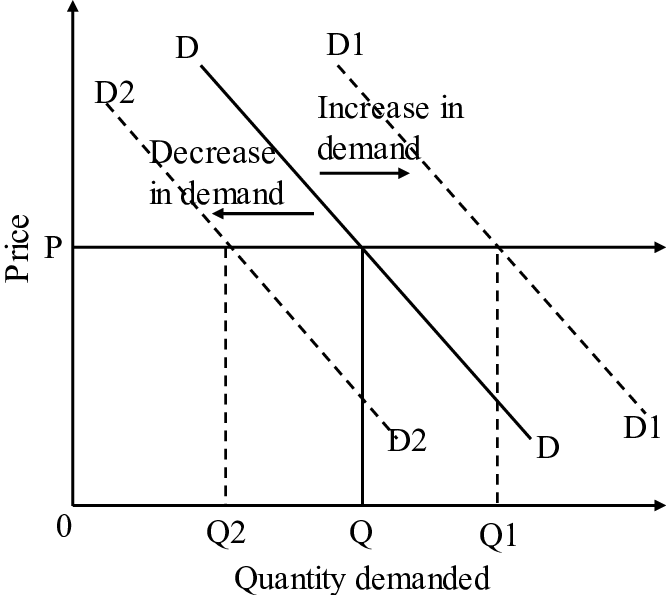
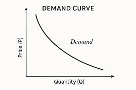

Lesson 1 – Demand
Kahulugan ng Demand
Ang demand ay tumutukoy sa dami ng produkto o serbisyo na gusto at kayang bilhin ng mga mamimili sa isang takdang presyo at panahon.
Hindi lahat ng gusto ay maituturing na demand — dapat ay may kakayahan ring bumili ang mamimili.
Mga Salik na Nakaaapekto sa Demand
- Presyo ng Produkto: Kapag tumaas ang presyo, bumababa ang demand; kapag bumaba ang presyo, tumataas ang demand.
- Kita ng Mamimili: Normal goods – tumaas ang demand kapag tumaas ang kita. Inferior goods – tumataas ang demand kapag mababa ang kita.
- Panlasa o Kagustuhan: Naapektuhan ng uso, kultura, social media, at endorsements.
- Populasyon: Kapag mas maraming tao, mas mataas ang demand.
- Presyo ng Kaugnay na Produkto: Substitute (pamalit) at complementary (magkasabay gamitin).
- Ekspektasyon sa Presyo: Kung inaasahang tataas ang presyo sa hinaharap, bibilhin na ngayon kaya tataas ang demand.
Batas ng Demand
"Kapag tumaas ang presyo, bumababa ang demand. Kapag bumaba ang presyo, tumaas ang demand."
May magkasalungat o inverse relationship ang presyo at demand.
Demand Schedule (Halimbawa)
| Presyo (₱) | Dami ng Bibilhin (Qd) |
|---|
| 50 | 10 |
| 40 | 20 |
| 30 | 35 |
| 20 | 50 |
Paggalaw sa Demand Curve
- Movement (Extension/Contraction): Pagbabago dahil sa presyo lamang.
- Shift sa Kurba: Paglipat sa kanan – tumaas ang demand kahit walang pagbabago sa presyo; sa kaliwa – bumaba ang demand kahit walang pagbabago sa presyo.
Halimbawa sa Totoong Buhay
Kapag may sale tulad ng 11.11, bumababa ang presyo kaya tumaas ang demand.
Kapag nagtaas ng presyo ang isang fast food, bababa ang bibilli kaya bababa ang demand.
Kapag sumikat sa social media ang isang produkto, kahit mahal ay maraming bibilli kaya tumaas ang demand.
Mga Konsepto na Dapat Tandaan
- Demand ≠ Gusto: Kailangan may kakayahang bumili.
- Purchasing Power: Kakayahan ng pera na makabili ng produkto.
- Ceteris Paribus: Ibig sabihin “all things being equal” — ginagamit kapag presyo lang ang nagbago sa pag-aaral ng demand.

